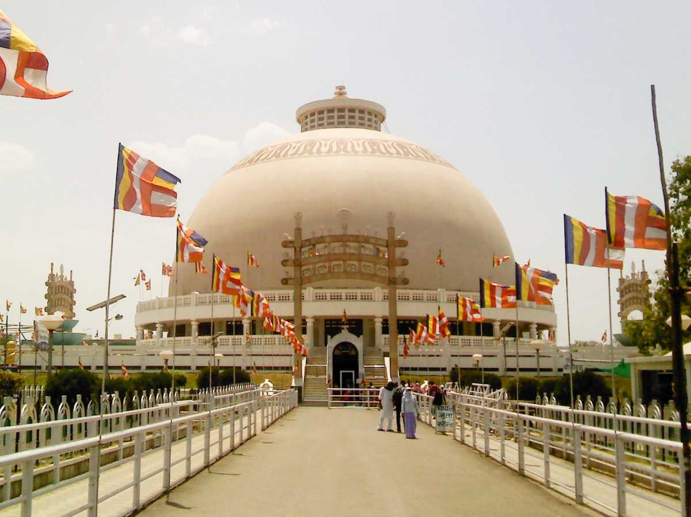
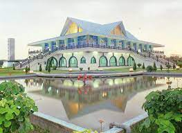

Tourist PLACES
- Dhamma Chakra Stupa
Also known as Deeksha Bhumi, the stupa is a marvelous architectural body and can accommodate more than 5,000 people. It is built out of Dhaulpur sandstone, marbles & granites and is 120 feet in height.
Followers of Ambedkar & Buddhism gather here on Ashoka Vijaya Dashmi, marked to celebrate the amalgamation of many dalits to Buddhism by Doctor Ambedkar, to offer their tributes. The place is of great religious importance to them.

- Zero Mile
Zero Mile Marker is a monument built in the era of Britishers for undertaking Trigonometrical surveys of this country. Made using a pillar, four stucco horses and small stone, this place apparently mark as the center of India geographically. However, there is not enough evidence or document supporting this fact. The Britishers used to make use of the marker here for measuring geographical distances.

- Drogen palace
About 20 kilometers from the city of Nagpur is a place called Kampee where this Buddhist temple attracts tourists every year. Here, devotees are often seen chanting Buddhist prayers and meditating for hours and hours at stretch.
The temple has proven to be a great city escape during the summers for Nagpurians when the scorching heat can become a little too unbearable. A drive or two-wheeler ride early in the morning is the best way to travel and make the most of overall experience to this getaway.
